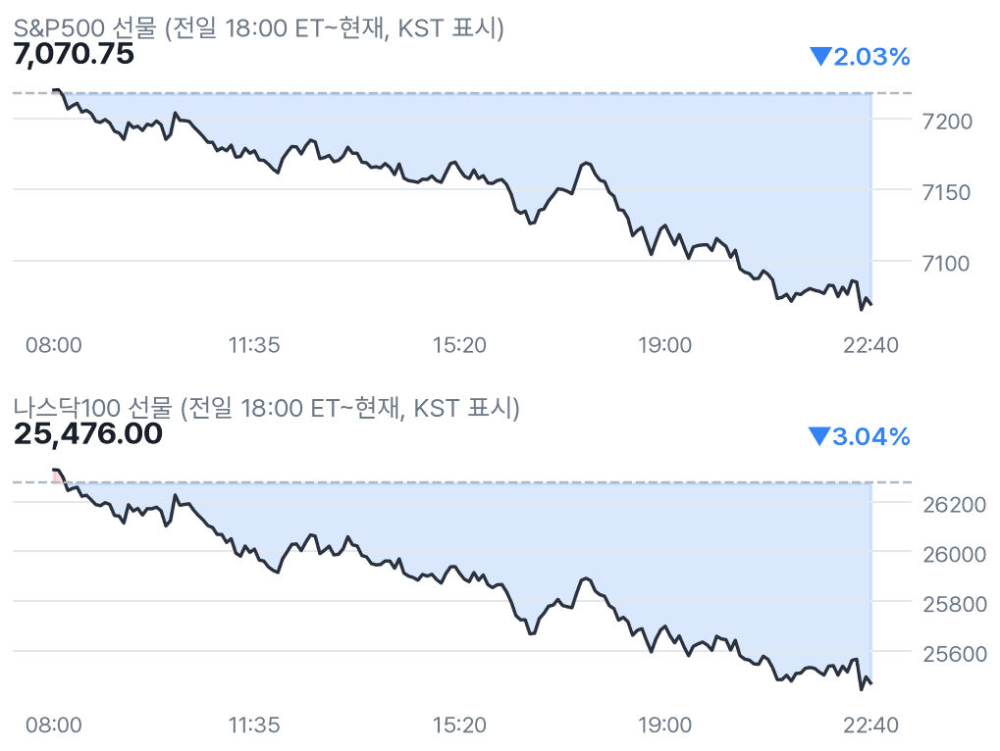
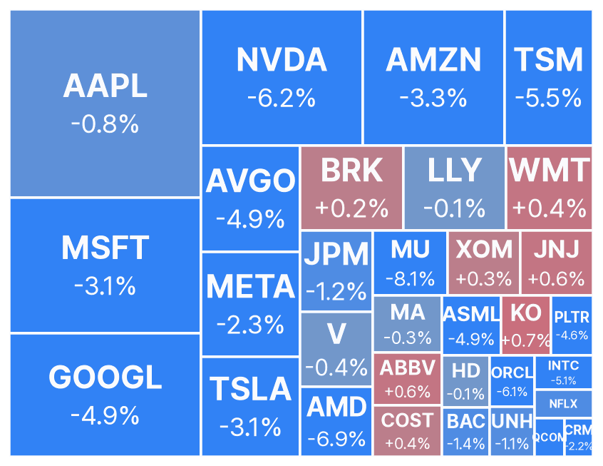
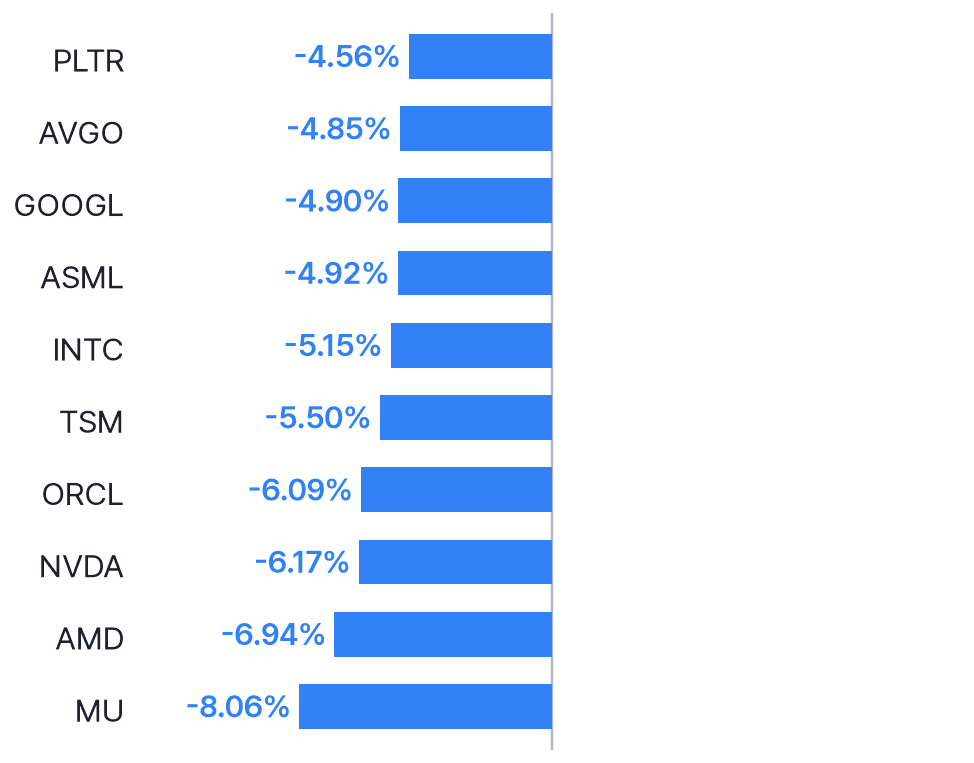
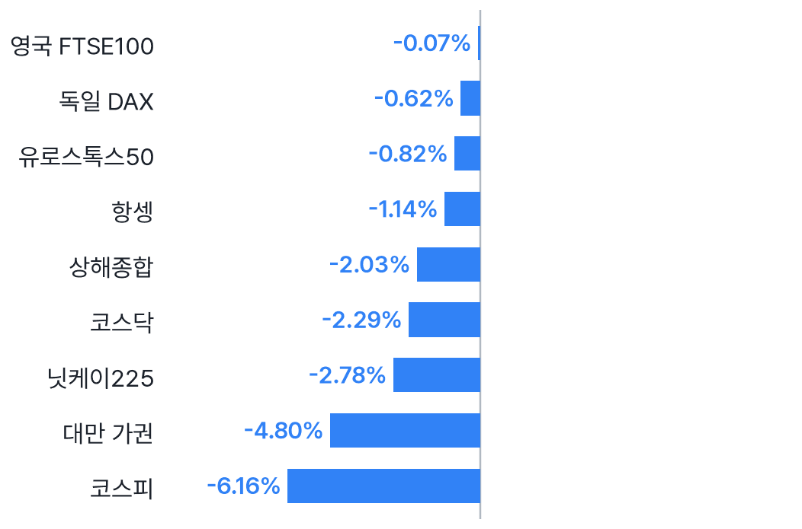
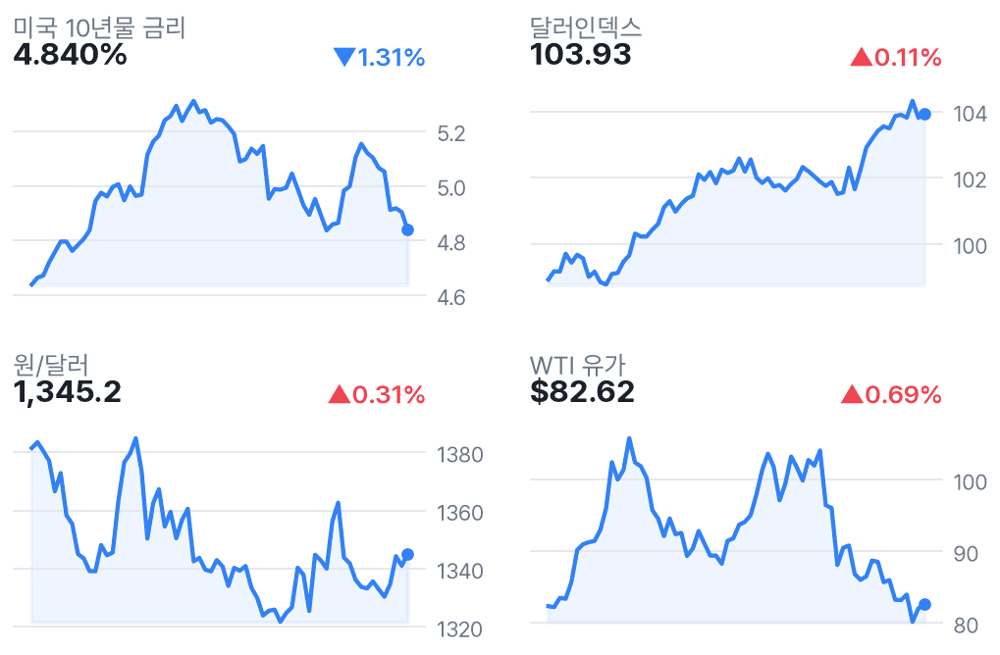

나스닥100 선물 3.04%↓, AI주 매도·관세 우려
✅ 핵심 요약
- AI주 매도·관세 우려에 S&P500 선물 2.03%↓. citeturn356311search4
- 10월 근원 PCE 전월비 0.3%(예상 0.3%)로 부합. citeturn384612view0
- 3분기 GDP 2차 추정 연율 4.3%(예상 3.5%)로 상회. citeturn637239search16
- 장전 마이크론 8.06%↓·AMD 6.94%↓·엔비디아 6.17%↓
📊 주요 지표
S&P500 선물
7,070.75
▼2.03%
나스닥100 선물
25,476.00
▼3.04%
다우 선물
49,409
▼1.30%
러셀 선물
2,652.00
▼1.39%
VIX
31.38
▲19.04%
미국 10년물
4.840%
▼1.31%
달러인덱스
103.93
▲0.11%
원/달러
1,345.2
▲0.31%
WTI
$82.62
▲0.69%
금
$3,499
▼1.75%
비트코인
$58,119
▼2.73%
유로스톡스50
5,954.40
▼0.82%
🧭 시장 해석
AI 투자 수익성에 대한 의구심이 이어지며 엔비디아·마이크론 등 반도체가 장전 하락을 주도했다. 미국의 신규 관세 제안도 부담을 더했다. 관세는 아직 확정되지 않았다.
22:30 발표에서 근원 PCE 전월비는 예상에 부합했지만 전년비는 3.3%로 높아졌고, GDP는 예상을 웃돌았다. 미 10년물 금리는 4.840%로 내린 반면 VIX는 31.38로 뛰었다. 개장 후 반도체 매도가 다른 업종으로 번지는지가 관건이다.
아시아에서 이어진 반도체 약세
대만 가권이 4.80%, 코스피가 6.16% 하락 마감한 뒤 미국 장전에서도 TSMC가 5.50% 내렸다. 미국 반도체주가 낙폭을 줄이는지와 원·달러가 1,345.2원에서 더 오르는지가 다음 국내장에 영향을 줄 변수다.
디어: 장전 실적 예상 하회
디어가 공시한 분기 희석 주당순이익은 $3.89로 집계 예상치 $4.07을 밑돌았다. 주가는 장전 4.20% 하락했다. citeturn356311search8
📈 차트
미국 지수 선물 야간 흐름

점선 = 전일 정산가
빅테크·대형주 프리마켓 히트맵

전일 종가 대비 프리마켓 현재가 · 타일 크기 = 시가총액
프리마켓 변동 상위 10 (대형주)

변동폭 절대값 기준
유럽(장중) · 아시아(마감) 증시

현지 기준 전일 대비
금리·달러·원화·유가 (3개월)

우측 상단 = 전일 대비
🏦 애널리스트 · 리서치
-
암바렐라에 대한 투자의견을 낮췄다는 보도.
-
뉴타닉스에 대한 투자의견을 낮췄다는 보도.
-
임상시험 수탁업체 아이콘에 대한 투자의견을 높였다는 보도.
📰 주요 뉴스
-
AI주 매도세가 반도체 전반으로 번졌다.CNBC
-
월간 근원 물가는 예상에 부합했지만 연간 근원 물가는 가속했다.CNBC
-
미 경제분석국은 투자와 소비를 상향 조정했다.MarketWatch
-
확정 전이지만 수입 비용과 교역 정책의 불확실성이 커졌다.CNBC
미국·글로벌 헤드라인 18건
-
CNBC · 11/25 22:50
-
CNBC · 11/25 22:47
-
CNBC · 11/25 22:44
-
Beef Magazine · 11/25 22:44
-
MarketWatch · 11/25 22:41
-
CNBC · 11/25 22:37
-
MarketWatch · 11/25 22:34
-
MarketWatch · 11/25 22:30
-
MarketWatch · 11/25 22:30
-
WSJ Markets · 11/25 22:28
-
MarketWatch · 11/25 22:23
-
CNBC · 11/25 22:20
-
MarketWatch · 11/25 22:16
-
MarketWatch · 11/25 22:16
-
CNBC · 11/25 22:15
-
WSJ Markets · 11/25 22:15
-
MarketWatch · 11/25 22:09
-
MarketWatch · 11/25 22:09
애널리스트 관련 헤드라인 12건
-
TradingView · 11/25 22:20
-
TradingView · 11/25 22:20
-
Benzinga · 11/25 21:59
-
Benzinga · 11/25 21:54
-
Quantisnow · 11/25 21:42
-
Quantisnow · 11/25 21:42
-
Quantisnow · 11/25 21:41
-
Quantisnow · 11/25 21:37
-
Quantisnow · 11/25 21:37
-
Quantisnow · 11/25 21:37
-
Quantisnow · 11/25 21:37
-
Quantisnow · 11/25 21:37
국내 헤드라인 6건
-
뉴스핌 · 11/25 22:45
-
뉴스핌 · 11/25 22:18
-
미주조선일보 · 11/25 17:45
-
SBS 뉴스 · 11/25 17:02
-
SBS Biz · 11/25 16:09
-
더퍼블릭 · 11/25 15:49
🗓️ 일정
경제지표·이벤트 (KST)
- 22:30🇺🇸 미국 Core PCE Price Index m/m11/25 · 중요도 높음 · 예상 0.3% · 이전 0.3%
- 22:30🇺🇸 미국 Prelim GDP q/q11/25 · 중요도 높음 · 예상 3.5% · 이전 3.4%
- 22:30🇺🇸 미국 Prelim GDP Price Index q/q11/25 · 중요도 중간 · 예상 2.3% · 이전 2.3%
오늘 미국 실적 발표 (장전=발표 완료 · 장후=새벽)
- DE Deere & Company장전시총 $170.7B · EPS 예상 $4.07 · 시간외 ▼4.20%
👀 체크포인트
- 23:30미국 정규장 개장: 반도체 낙폭과 국채 금리 반응
- 내일 새벽연준 베이지북: 소비·고용·가격 동향. citeturn356311search1
- 내일 밤추수감사절로 뉴욕증권거래소 휴장. citeturn384612view1